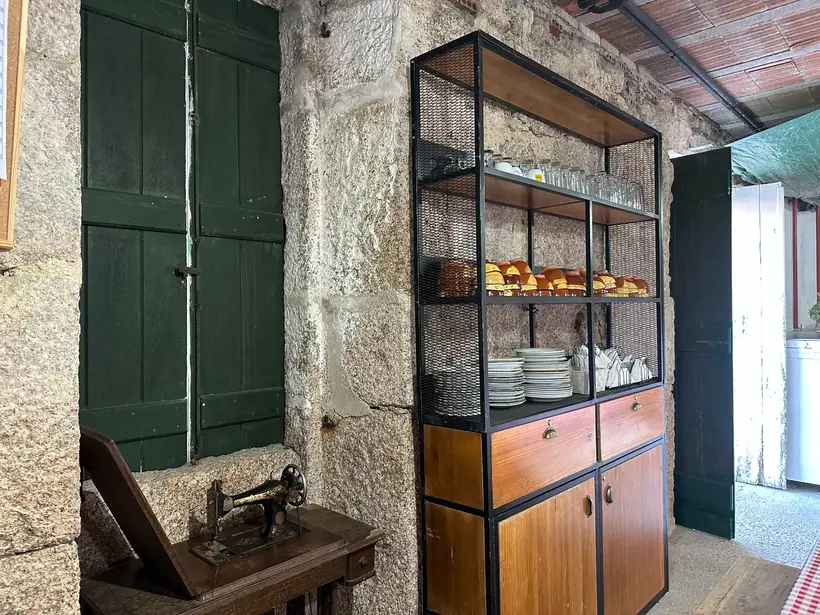
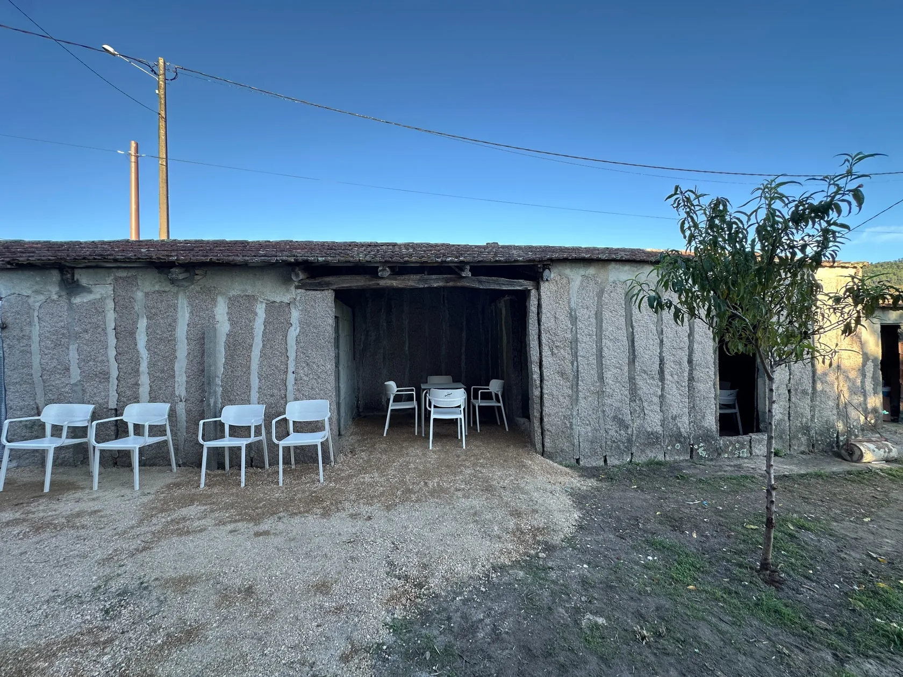

COMISIÓN DE FESTAS SAN BENITO DA ROCHA · ATIOS
A festa
comeza aquí.
Hai lugares que son moito máis ca catro paredes. Son conversas, risas, tradición e ganas de volver xuntarnos. Na Rocha, a festa facémola entre todas e todos.
UN LUGAR MOI NOSO
Pedra, madeira
e moitas historias.

A Tasca da Rocha, o noso punto de encontro.
Muros de pedra, portas antigas, barrís de madeira e mesas preparadas para compartir. Cada detalle deste recuncho ten o encanto dos sitios que se gozan sen présa.
Este espazo tamén é para iso: xuntar fotografías, contar as novidades e manter viva a ilusión polas festas de San Benito da Rocha, en Atios.
Horario de apertura
Venres e sábados, a partir das 18:00 h.
NA NOSA AXENDA
O bo
está por chegar.
Aquí contaremos todo o que imos preparando dende a Comisión de Festas San Benito da Rocha Atios.
Próximas festas
Estamos preparando as vindeiras celebracións. En canto teñamos as datas e o programa, publicarémolos aquí.
Iremos engadindo aquí as datas, as novidades e todos os detalles de cada celebración.
OS NOSOS RECORDOS
Un paseo pola
Rocha.
Ás veces as fotos contan máis ca mil palabras. Así é o noso recuncho por dentro e por fóra.
Preme nunha fotografía para vela en grande.
O QUE ANDAMOS ARGALLANDO
A nosa vida
en Instagram.
Un anaquiño das nosas festas, os preparativos e os momentos que compartimos. Descubre as fotos e os Reels da comisión.
@san_benito_da_rocha_atiosSe as publicacións non aparecen, podes velas directamente no noso perfil de Instagram.
Ver máis en InstagramO MÁIS IMPORTANTE
A festa
facémola entre todos.
As mellores festas fanse con persoas que achegan ideas, tempo, ganas e moita ilusión. O que fai especial a Rocha é a súa xente e as ganas de celebrar xuntos.
Colabora connosco
ONDE NOS ATOPAS
Falamos?
Tes algunha idea, queres botar unha man ou saber o que estamos preparando? Encantaríanos contar contigo.
COMISIÓN DE FESTAS SAN BENITO DA ROCHA ATIOS
Sempre hai sitio para alguén máis.
Podes atoparnos nas nosas redes sociais. Para visitar o furancho, consulta a localización.
O Porriño (Pontevedra)Como chegar · Ver en Google Maps